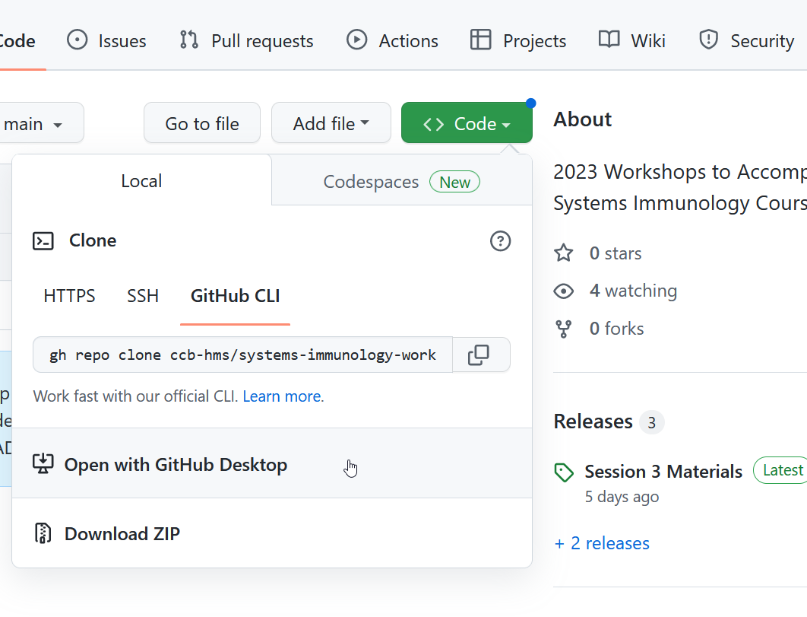
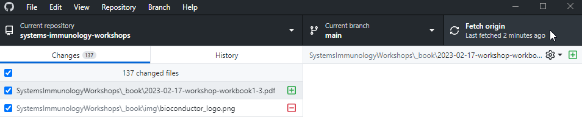

26 Getting Started with Git & Github
26.1 What is Git / GitHub
Git is a file version control system that helps you keep track of any changes you make to specific documents (e.g., code). This a much more elegant solution than copying a file over and over and changing the name to things like: file_version1, file_version2, file_final, file_finalVersion, file_final_finalVersion …
Watch this video to get a little more of an introduction to Git.
GitHub is an online service that allows you to share Git repositories with other people. You can either Pull an existing repository to you machine and start working on it yourself, or you can Push any of your repositories (or changes made to someone else’s) to GitHub to share them with others (or even yourself if you have multiple computers).
Watch this video to see how GitHub can help distribute code safely between many people without causing issues.
26.2 Create a Github Account
If you do not have one already go to github.com and register for a new account. We recommend you use a personal email address to sign up as your GitHub is seen as a personal asset. However, with an academic email you can unlock more features so once registered you can add your Harvard or other .edu email address to get educational benefits as a student or as a teacher/researcher.
26.3 Option 1: Github Desktop (reccomended)
If you are unfamiliar with using the command line, Github Desktop can be a good place to start.
You can then go to the workbook repository and connect it to your Github Desktop:

Finally, you can click fetch (the button may say pull) from within the Github Desktop client to download files locally.

26.4 Option 2: Command line
Follow the instructions here to install Git or a Git client on your computer.
It is recommended for you to setup your local username and email address before using Git, and in some cases is required. This does not need to match GitHub (we’ll do that next). You will need to use a terminal window for this (Command Prompt in Windows or Terminal on Mac). You can also use the Terminal window in RStudio if you prefer (different from the Console window)
`git config --global user.name "First Last"`
`git config --global user.email "me@email.com"`Watch detailed instructions in this video if needed
You can then clone the repository locally.
git clone https://github.com/ccb-hms/systems-immunology-workshops.git
Whenever the workbook is updated, you can pull it to download the changes. Within the systems-immunology-workshops directory, simply enter:
git pull
26.5 Option 3: Integrate Git /GitHub with RStudio
RStudio has an integrated Git user interface that makes it very easy to use both Git and GitHub.
To get a copy of the workbook repository in RStudio do the following:
- Click
File→New Project - Select
Version Control→Git - For the URL choose: https://github.com/ccb-hms/systems-immunology-workshops.git
- You can choose the name of the project directory.
- Choose the folder in which you want to store the R project and Git (depends on how you organize your files)
- Click
Create Project - Check the
Filestab to see if you have successfully created the project
Whenever you are working in an RStudio project that has a dedicated Git repository, you can interact with Git through the Git tab (same pane as Environment tab)
26.6 Stashing changes if needed
If you edit your local copy of the workbook, when you try to pull or fetch files in the future you may run into an error. This is because Git isn’t sure whether you want to discard your local changes or not. You can stash your local changes, pull/fetch, and then pop your changes to download the new files and integrate your changes. However, if you have edited files which have also been updated, such as writing a solution in a file which then had an added solution, you may get a merge conflict.
26.7 Resources:
- A good git reference book
- Git desktop environments: https://desktop.github.com/ and those from https://git-scm.com/downloads
- RStudio and git guide
- A great interactive site for learning Git
- A useful git cheat sheet
- Software Carpentry’s git lessons
- Github’s Git guides